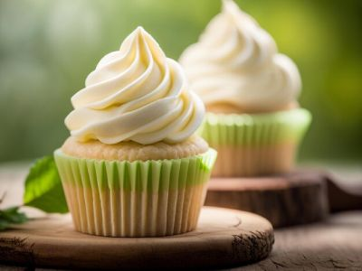
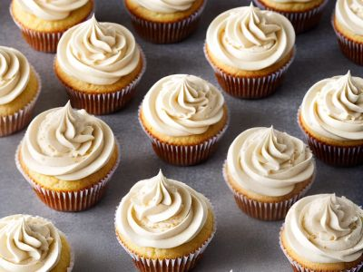

Preço: R$ 8,50
Tamanho: Médio


Um cupcake atemporal e perfeito para qualquer ocasião. Nosso cupcake de baunilha clássico apresenta uma massa fofinha e úmida, complementada por uma generosa camada de cobertura de buttercream de baunilha, leve e irresistível. Uma verdadeira delícia que agrada a todos os paladares.
| Característica | Detalhe |
|---|---|
| Tamanho | Médio |
| Sabor do Bolo | Baunilha |
| Sabor da Cobertura | Buttercream de Baunilha |
| Cor Principal | Branca/Creme |
| Nutriente | Quantidade |
|---|---|
| Valor Energético | 350 kcal |
| Carboidratos | 45g |
| Proteínas | 4g |
| Gorduras Totais | 17g |